What Predicts Medical Debt?
Counties with large shares of people with multiple chronic conditions (in blue) tend to have higher levels of debt than counties with less illness (red). Each dot represents a county.
(Percentage of county population who have 6+ chronic conditions)

(Percentage of county population who has medical debt in collections)